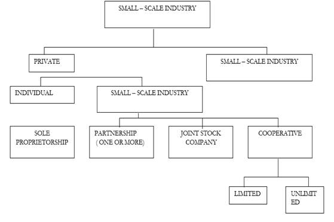
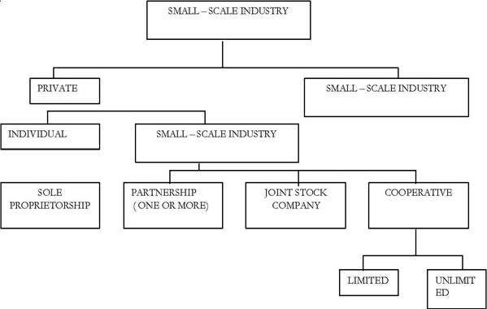
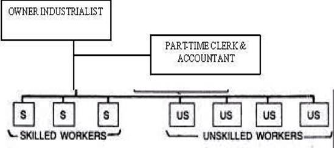

ARM402 :: Lecture 17 :: BUSINESS ORGANIZATION

Learning Objectives
• Factors to Be Considered While Choosing an Organization
• Types of Organizations
Introduction
The selection criteria of a proper form of organisation is crucial for the success of business enterprise. Every entrepreneur has to decide, at the outset, about the type of organisation, which he plans to select for his private enterprise. Its unimportant entrepreneurial decision. This choice is by and large influenced by the socio-cultural norms and then prevailing industrial environment..
The decision of an entrepreneur depends on a number of variable factors. Among the many, the following factors are given weightage in making a choice of a suitable form of organisation, which is most suited to one’s enterprise. The deciding core factors are:
- Type of business – service, trade, manufacturing.
- Selection of industry and the area of operation.
- Scope of operations, volume of business and the size of the market, including its expected growth potential.
- Amount of capital funds required – initial capital, working capital.
- Possibility of raising resources from the market – institutions, subsidies and other incentives.
- Costs and procedures and relative freedom from Government regulations.
- Comparative tax advantages, etc.
- Size of the risk
- Continuity of the enterprise.
- Degree of direct control and adaptability of administration.
By and large, the final organizational choice is a compromise that is most suitable to the entrepreneur’s needs. The above ten factors are the major factors that will influence the choice of a proper form of an organisation, which will withstand all the stresses and pressures and strive for its smooth progress on an ongoing basis.
The aim of entrepreneurial development programmes in India should not be to treat the small entrepreneurs as small, but to help the more promising and efficient ones amongst them to grow big. This will mobilize the productive resources of the country, contain the monopoly of a few large enterprises, and increase income, profits and employment. The objective is to accelerate the process of innovative entrepreneurial development in the country. Herein, choice of organisation also depends on the entrepreneurial skills and vision.
Ownership Organisation
The first and foremost question in organizing a small-scale industry is that of ownership, represented by the right of an individual or a group of individuals to acquire legal title to assets for the purpose of controlling an industrial operation and enjoying the gains or profits flowing from such activities.
Small industrial units are, by and large, started by persons who value independence and are desirous of obtaining the highest rewards for their initiative, innovation, technical skills, business acumen and experience. As Nihal Singh aptly observed that “The owner of a small industry values his undertaking for the job it provides him as for any return it may make on his invested capital. “The chief forms of an ownership organisation are:
i. Sole proprietorship
ii. Partnership;
iii. Co-operative society; and
iv. Joint-stock company.
Each entrepreneur has to make policy decisions in all vital areas of business activities and organise and manage his business affairs on scientific lines. He has to make a decision’ either as a manufacturer of some product or as the distributor of the products made by others. Whatever activity he chooses, he will be confronted with problems and his ultimate success will depend upon his entrepreneurial ability to solve these problems. He will have to make a Policy decision about the size of organisation. Should he start his enterprise as a’ sole proprietary concern, partnership or any other form of organisation suited to the-needs of his, business? Should it be a small-scale industry or a large-scale industry? He should also decide whether to, register the SSIs with the appropriate authorities or not.
Ownership Organisation Decision
The entrepreneur’s choice of the type of organisation will depend upon the nature of business, scale of operation, capital requirements, ownership rights such as’ control and decision-making opportunities and impact of taxation. He should understand the impact of these factors on his business and decide whether to operate his business as a one-man show or a joint venture company - In general, an entrepreneur wishing to start an industry- on his own will prefer to organize it on a small-scale unit if he has a limited capital and skill, and cater for the local market. If he is unable to do so, he will call-for responses from partners, join his in this business. In this way, new ability and more capital will be brought into the businesses. Partnerships are common in commercial businesses.
Partnership is not a legal entity; the partners are personally responsible for all the activities performed by them in the name of the firm. The risks associated with the unlimited liability can be avoided and large amount of capital can be brought by forming a limited company. If the capital requirements are not very large, a private limited company may be formed to meet the needs of a large capital to run a large business, a public company will have to be formed A survey of SSIs in Greater Bombay showed .the organisational structure of small business units. The sole-proprietorship is the most popular form of small business ownership. According to the survey, 78.5% of the total units were of private proprietorship type, joint family and partnership accounting together 20%, cooperative and private limited units accounting together for about 1 % of the total. Even in the case of joint family and partnership, many a times a single entrepreneur controls the enterprises.
The type of organisation suited for these units depend upon several factors such as the nature and type of industry, the extent of capital, the nature of skill required, and the capacity to offer livelihood to the participating factors. Sole proprietorship is, however, the dominant form in these enterprises.
State Policy
It is the policy of the Government, both at the Centre and in the States, to encourage and promote cooperative enterprises of all types the Registrar- of cooperative Societies in each State is concerning with the administration, supervision, coordination and development of cooperative societies, -assisted by deputy registrars, _assistant registrars and inspectors. The registrar offers assistance and guidance in the formation of all types of cooperatives and keeps a vigilant eye on their stability, administration, working, financial accounting, etc. through instructions, regulations, inspections, audit and other checks. Fig.
43.1 shows the forms of ownership organization in a small –scale industry
Sole Proprietorship
“Sole proprietorship is a form of business organisation in which an individual invests his own capital, uses his own skill and intelligence in the management of it’s- affairs and is solely responsible for the results of its operation. The individual, with the -assistance of other workers or by is own labour and capital; may nun the industry. This form of organisation is also known” as individual entrepreneurship - the oldest and the most sought after form of enterprise - in the field of small-scale industry, and the easiest and simplest form of entrepreneurship from the operational point of view. The individual entrepreneur embarks upon some industrial activity with his own savings or with funds borrowed from his friends or relatives.

The industry may be started either in a portion of the entrepreneur’s own house or in rented premises. There are no legal formalities to be gone through except those required for a particular type of industry. For example, if the entrepreneur decides to start a small engraving industry, he has no legal’ formalities to comply with. He and’ his family members may run the industry in their own residence.’ In this form of ownership, the liability is unlimited. The small industrialist and the industry are highly interrelated and integrated. If the industry prospers, the entrepreneur is the sale beneficiary, and vice versa. Moreover, he enjoys full c6htrolover the affairs of the industry and the sale authority to decide, plan and control the operations of his business: In short, the entrepreneur is his own master. The import features of a sole proprietorship’ are:
a. |
Sole ownership; |
b. |
One-man control; |
c. |
Unlimited risk; |
d. |
Undivided risk; |
e. |
No Separate entity of the firm; |
f. |
No Government regulations. |

Merits
The sole proprietorship for of organization has the: following advantages:
- Easy and simple formation: The greatest advantage of this form of organization are necessary for its formation. One can open it easily and in a simple manner and at the same time, one can close it down whenever he may choose to do so. There are no legal formalities for expansion, contraction or dissolution of the business. Thus, it is the most flexible type of business enterprise.
- Smooth management: Another merit of this form of organization is that the management of the concern can be carried on smoothly. There is no one to oppose and hence there is no room for any friction.
- Promptness in decision-making: The sole proprietor is free to conduct the affairs of his business and he has to consult no one for it. For this reason, he is able to make quick decisions without any delay and hesitation. Such promptness in decision making is essential, in general, for the smooth conduct of business operations.
- Direct motivation and incentive to work: The sole” proprietorship he to assume “all the risks and is entitled to receive all the profits; therefore, he takes pains to work hard as there is direct relationship between the efforts and the rewards.
- Personal touch with customers: A sole trader is always able to maintain close and personal touch with his customers with this, he is able to the tastes and needs of the consumers. Such personal touch adds to the success of the business.
- Secrecy: An individual entrepreneur’ is able to maintain complete secrecy about important maters relating to his business and thus may be able to safeguard business secrets from his competitors.
- Social advantages: This refers to the provision of employment opportunities to many by ensuring diffusion of business ownership and thus concentration of wealth and power in the hands of a few is avoided. Further, it helps in the development of several essential qualities in entrepreneurs, such as the initiative, hard work, responsibilities, taut “and. self-reliance etc. The single proprietorship offers the best promise of securing motivation and “widespread ownership’ and control of industry.
Limitations
The sole proprietorship .has several limitations which are as follows:
i. Limited financial resources: The greatest limitation in this case is that the capital available for the business remains very limited. An individual cannot possess enormous savings and he can borrow only limited funds from his friends and relatives. He may not have enough credit to borrow huge sums from the banks or financial institutions. This limits the size as well as financial profits of the business.
ii. Limited managerial ability: An individual cannot be expected to possess knowledge of every branch of management. Now, when the management is highly specialized and business is becoming more and more complex, nobody can claim to be an expert on all the subjects. An individual may have limited knowledge and ability to take correct decisions. He may take a wrong decision, which ultimately may prove to be drastic for the business. Few persons are qualified by training or experience to handle alone the varied problems of purchasing, merchandising, advertising, customer relations and financing.
iii. Unlimited liability: Another great limitation is that the liability of the sole trader is unlimited. It implies that there is always a risk that he may lose the capital invested in his business as well as his personal property. In the event of some disaster, his creditors can satisfy their claims out of his personal property also. Thus, the entire risk has to be borne by one person alone. But, in a way unlimited liability may be of help too. The sole trader may get more credit from the creditors, as the limit of credit may extend to the value of property owned by him, and it will not be limited to the extent of capital invested by him in business only.
iv. Lack of continuity: There is always lack of continuity or stability, in such business. The mortality rate of such business has also been high. If the owner all w ill or. he is away, the business stops. In case of any mishap, the business may disappear completely or may have to be rebuilt.
In spite of the above limitations, this form of business organisation occupies a prominent place in the business world. In advanced countries and in developing economies like India, it is playing an important role. This form is best for small ventures and may be more than a match for larger enterprises’. It is more suitable for concerns, where (i) capital required is small, {ii} risk involved is not heavy, (iii) goods of artistic nature are to be produced, (iv) personal touch with customers is necessary, (v) an. individual is able to control the affairs, (vi) prompt decision is needed, (vii) scale of production is relatively small, and (viii) operation is simple in character not needing highly skilled management.
Nearly 61 % of the SSIs are proprietary concerns. The most important factor in the formation of proprietary concerns is noninterference, from others. Further, an entrepreneur is not bound by law to publish annual accounts or to keep accounts except to the extent it may be necessary to do so for income-tax and other related purposes. He need not disclose any confidential information. Besides, this form of organisation is simple, and no legal formalities are required for its formation.
Partnership Organisation
Partnership organisation grew and gained importance, as an individual is not competent enough to possess enormous capital and knowledge or competence to manage everything. With the expansion of business and enlargement of the scale of its operations it became necessary for a group of persons to join hands together and supply’ the necessary capital and skills. Often it is found that a person may be having a huge capital but may not possess the required skill. Individually, none of them can run a business enterprise-single-handed but together they may be highly successful in its operations. Thus, partner-ship organisation he been adopted to arrange’ more capital, offer: better skill, control and management to take advantage of high degree of specialization and division, of labour; and to share the risks. In India, the Indian Partnership Act, 1932, governs such organizations. Section 4 of this Act defines a partnership as “the relation between persons who have agreed to share profits of a business carried on by all or any of them acting for all.” Persons who enter into partnership are collectively known as “firm” but individually known as Persons who enter ‘into partnership are collectively known’ as “firm” but individually known as “partners. “
If we analyse this definition carefully, the following points emerge as the main elements of “partnership” (i) Partnership is the relation between persons, i.e., at least two persons, must be there to constitute a partnership. (ii) There should he an agreement between them. This also means that persons .should be- legally competent to enter into a contract (iii} They should carry on some business. It implies that in agreement; to run a charitable institution will not constitute a partnership. Business here necessarily implies a lawful business. {iv} The business must be earned on by all or any of them acting for all. Thus, one or some partners can represent the firm and bind it by his/their actions in the course of business.
Basic Features
The partnership organisation has some basic or fundamental features, which have been discussed below, with special reference to the position -of partnership in India.
- Number of persons: There should be at least two persons to form a partnership organisation’. In India, there is no upper limit prescribed under the Partnership Act, but a limit has been put under the Companies Act indirectly. Under this Act, a partnership consisting of more than 20 Act indirectly. Under this Act, a partnership consisting of more than 20 persons for a general business and 10' persons for a banking business has been made, illegal. Thus, the upper limit of the number of partners in a general business is 20 and in the banking business it is 10.
- Contractual relationship: Partnership is the result of contractual relationship between two or more persons. There must be an agreement between persons who wish to form a partnership. It is a fundamental feature of the partnership organisation. For example, a manager of a firm may get his remuneration which may be based on the profits of the firm, but on that account he cannot be taken as a, partner as the element of agreement, is not there. Similarly, two or more persons may be sharing the gains of a proper4ty jointly held and on that account alone, there cannot be a partnership jointly held between them. Further, as it is the result of a contract, the law does not interfere with its formation or dissolution. On that very basis, no partners agree for the same. Similarly, if a partner dies the firm gets dissolved, as one of the contracting parties is dead. Thus, it has been rightly said that a partnership arises from a contract and not from status.
- No legal distinction: between firm and its partners: It has been mentioned, earlier, that persons entering into a partnership are individually known as partners and collectively as a firm. Since a partnership is merely an association of persons, no separate legal entity or factitious partners are created. This implies that the law does not make any distinction between the firm and the partners who compose it. Any partner can bind the firm with his decisions on behalf of the firm. But, at the same time, a partner is free to undertake personal business or enter into personal contracts.
- Unlimited liability: Just like the sole proprietorship, the liability of the owners of the firm is unlimited. But the difference between the two is that in the case of the former, all risk is to be shouldered by one person alone but in the case of a partnership, this is borne by two or more persons. This means that a partner is not only liable to the extent of capital he has invested in the firm but he may be called upon to meet the liability out of his personal property also. If need be, the creditors of the firm can claim debt but out of the personal property of the partners. In such as eventuality, the partner loses the capital invested in the firm as well as his personal property.
Advantages of Partnership Organization
A partnership organisation has certain advantages as compared to the sole proprietorship or joint – stock company organisation. We discuss below these advantages:
- Easy formation: A partnership can be easily formed as no legal formalities are to be observed to establish it. At the same time, unlike a company, not much of to be observed to establish it. At the same time, unlike a company, not much of expenses are incurred for its formation.
- Flexibility: A partnership organisation is highly flexible as well as mobile. Changes can be introduced without’m\lct’1 difficulty. The necessary additional capital can be raised, new partners be introduced including changes in the, place and object of the firm. Business of the firm can’ also be expanded or contracted according to the needs.
- Pooling of resources and skill. Unlike the sole proprietorship, under a partnership, several persons pool their capital, resources, skill, expertise, experience and services etc. Two or more persons are always better than one and bi that sense partners strive to work with zeal for the better. It enables combination of such individuals who may not be in a position to do anything alone.
- Division of risks: Under a partnership, the risks of business are divided among the partners and are not shouldered by one person alone. Thus, it is more useful for business with large investments.
- Strong credit position. Unlimited liability of the partners enhances the creditworthiness of the firm. The credit can be extended to it to the limit of the value of property owned by the partners, and not confined to the extent of capital contributed by the, partners. Further, it restricts on the speculative and reckless activities of the partner with, which they always remain vigilant.
- Less incidence of tax. As compared to joint-stock company, the burden of taxes on a form or its partners individually is lower.
- Encouragement of mutual trust, personal element in business: Partners act in cooperation and thus mutual faith, trust and goodwill are maintained. They maintain personal relations with each other and take personal care, to promote thee business of the firm. This personal element in business that is not found in a company is highly useful. The existence of partnerships rests on mutual faith and goodwill and that way it encourages the spirit of helpfulness and instills the qualities of honesty, sincerity, responsibility, initiative and self-reliance.
Disadvantages
While-the partnership organisation has the above advantages; it has the following serious limitations which cannot be ignored:
i. Limited resources. In spite of pooling its of resources by in partners, it is not possible to raise-huge amount of capital and engage specialists required for modern business or Industrial units. Partners may be rich but their capacity to contribute capital is limited as compared to the needs of modem industrial complexes.
ii. Unlimited liability: One of the serious limitations of a partnership organisation is that the liability of partners is not limited. The partners like the sole trader unlike the shareholders of a company, may be personally held liable for the debts incurred by the firm. Their private property also remains at stake. Moreover, liability is cumulative. Further, a partner may also be called upon to compensate for the misdeeds and dishonesty of his fellow partners along with his own acts.
iii. Instability: Theoretically, it may appear that the partnership organisation is more stable than the sole proprietorship but in practice it is not so. It is often found that a firm’s business comes to an end on account of petty quarrels among the partners.
If a partner is dishonest and short-tempered, it may become difficult for other partners to carry on business with him.’ Any misunderstanding may prove ruinous- for it. It is also unstable because death, retirement, and insolvency of a partner may dissolve the partnership. It is quite true that the partnership provides better means to perpetuate itself “but existence of that ‘self’ at any given time is, more precious.”
iv. Lack of harmony of interest. Unlike a sole proprietorship, it is not possible to maintain harmony of interests among the partners. There is always the possibility of friction. The partners may follow a conservative policy to avoid risk of their private property. Their combined judgement often may not prove useful. If mutual cooperation is lacking, prompt decisions may also not be possible. There is the possibility of leakage of business secrets and matters which may’ affect the business adversely.
About 35% of the SSIs in India existed as partnership concerns 6f which;. 21% are joint-family partnerships and 14% partnership concerns. Very often, small entrepreneurs with business acumen and training are handicapped by lack of capital; or there may be need of a wealthy man with managerial capacity. Partnership organisations grew essentially out of the failures and limitations of the sole proprietorship form of organisation. The formation and management of a partnership organisation is governed by the provisions of the Indian Partnership Act of 1932. According to it, a “ partnership is the relation between persons who have agreed to share the profits of a business carried on by all or by anyone of them acting for all.” A partnership deed is essential for this type of organisation. The Partnership Act, 1932 outlines the rights and duties of a partner. The liability of a partnership is unlimited.
The ownership pattern of small units is given in the above table. As indicated in the table, 61% of the units are single proprietary small – scale industrial units, followed by family partnerships, i.e., businesses owned by two or more members of the family. Only 14% of these units are non – family partnerships, where the ownership is held by a small group which does not constitute a family. Among the small – scale industrialists, there is a strong tendency to keep the business within the family. As a general rule, a non-family partnership is restricted to craftsmen pooling their resources; alternatively, it may be a venture of a group of merchants. An industry – wise analysis shows that in the printing presses, general engineering and soap industries, 20% of the units fall in the category of non – family partnerships. In these cases, a large amount of capital investment is necessary, and the family resources are generally too meager for such a venture. The capital resources are increased by converting the industrial unit into a non – family partnership.

Functioning of one-man small scale entrepreneur doing all the work: (phase 1 )
In hosiery, leather goods and wooden furniture industries’ wherein capital investment is less and one can develop the business by productively utilising one’s skills with: the; cooperation of workers, a very large percentage of these units come under category of individual proprietorship.
OWNER INDUSTRIAL
Workers
Functioning of a single small-scale entrepreneur with the assistance of supporting staff: (Phase 2)
The growth of joint-stock companies constitutes an important step in the historical evolution of forms of ownership of business enterprises. With the enlargement of the scale of business operations, it became difficult for a sole trader or partnership firm to cope with the problems of finding more resources and managing for more specialised management.
The development of these companies has taken place almost in all the countries of the world but the nomenclature differs. There may be technical points of difference but the basic characteristics are almost the same everywhere. We call it joint-stock company in England and in India. In the U.S.A., it is known as a “corporation.
Definition: A company is a voluntary association of persons who contribute to its capital but their liability remains limited. It carries on business for profit as a legal entity. It can sue and be sued in its own name. Thus, a corporation is an artificial being, invisible, intangible, and existing only in the contemplation of law.
Being a more creation of law, it possesses only those properties which the charter of its creation confers upon it, either expressly or as incidental to its very existence.
Salient Features
A joint-stock company exists as a separate legal entity quite apart from that of the members comprising the organisation unlike a partnership. In other words, this company is considered to be a “person”’ in the eyes of law. Also this company possesses the right to own and transfer any property.
In India, only 3% of the units exist as joint-stock companies. In a sense, it is an extension of the partnership form; it is an association of a number of members which has a legal sanction behind it. Because of the complicated and cumbersome legal procedures, heavy taxation and the possibility of’ unscrupulous promote. Securing capital for an undesirable concern this system has not made any headway in the-small scale industries sector.
The Co-operatives
A cooperative society is essentially an association of persons who join together or a voluntary basis for the furtherance of - their common economic interests. The International Labour Organisation - (ILO) defines a cooperative as “an association of persons, usually of limited means, who voluntarily join together to achieve a common economic end through - the formation of a, idiomatically ‘controlled business organisation, making an equitable contribution to the capital required and accepting fair share of the risks and benefits of the-undertaking. “This type of organisation has not made any appreciable impact on the small-scale industrial sector Of the total small scale units, only 0.7% are organised as cooperative societies. These are mainly in which industries as, wooden furniture, and fixtures utensils, agricultural hand tools and implements, printing, and washing soaps.
Forms of Organisation
The selection or the form of organisation depends basically on the nature of industrial activity proposed to be undertaken, the scale of operations in terms of the volume of business proposed to be handled, the scope of the market to be covered, the sharing of risks and tax advantages. Three salient features of all forms of organisation are:
- Relationship – Line, Functional, Staff.
- Authority – Direct, Indirect, Representative.
- Responsibility – General, Specialized, Advisory. In other words, the organisational structure is based on:
- Division of labour;
- Co-ordination;
- Accomplishment of goals and objectives; and
- Authority – responsibility.
Comparative Evaluation of Different Forms of Business Ownership (See Table Below)
The process of organisation consists in making a rational division of work into groups of activities for the accomplishment of a task. The various stages of this process are:
- Determination of objectives;
- Enumeration of activities;
- Classification
- Fitting individuals {workers} into functional, activities; and
- Assignment of authority for action.
Basis of Comparison (1) |
Sole Proprietorship (2) |
Partnership (3) |
Private Company (4) |
Public limited Company |
1. Formation |
Easiest, no legal |
Easy, only an |
Difficult, some legal |
Very difficult, several |
2. Registration |
Not necessary |
Optional |
Compulsory |
Compulsory |
3. Membership |
One man show Single |
Minimum : 2 |
Minimum: 2 |
Minimum: 7 |
4. Legal status |
No separate legal |
No separate legal |
Separate legal entity |
Separate legal entity |
5. Liability of |
Unlimited, full risk |
Unlimited, Joint and |
Limited |
Limited |
6. Financial capacity & suitability |
Limited capital |
Pooling of capital, |
Large capital, suitable |
Very large capital |
7. Sharing of profits |
All to the owner |
As per agreement |
One the basis of shares |
On the basis of shares |
8. Management and |
Quick decision, |
Unanimous decision, limited specialization, |
Board decisions, greater specialization, |
Board decision, |
9. Business Secrecy |
Perfect secrecy |
Secrets limited to |
Secrets shared by |
Secrets shared with public, audit and reports compulsory |
10. State regulation and flexibility |
flexibility of |
Very little, sufficient |
Considerably, limited flexibility, privileges, & exemptions |
Excessive, no |
11. Transferability of |
full |
Low at small level of |
Low at medium level of |
Freely transferable |
12. Tax Burden |
Low at small level of |
Progressive rate |
flat rate, |
flat rate, |
13. Stability or |
Unstable, life fully |
Less stable, may be |
Perpetual existence |
Perpetual existence |
14. Winding up |
At will |
At will |
Under the Act |
Under the Act |
15. Governing Act |
General law |
The Partnership |
The Companies |
The Companies |
Line Organisation
A line organisation is the basic framework of an organisation. It is the backbone of the organisational hierarchy. Mr. Lundy has observed that “line organisation is characterised by direct lines of authority flowing -from, the top to the bottom of the organisational hierarchy and lines of responsibility flowing in an opposite but equally direct manner.” Under this type, various activities are organised in groups and controlled by a manager, who is responsible to the top man. In this type of organisation, authority flows from the top to the bottom while responsibility flows from the bottom to the top.
Advantages
- It is simple to form and easy to operate.
- In it, line executives enjoy decision-making powers.
- It has a systematic organisational structure.
- It maintains a balance between authority, responsibility and accountability.
- Discipline can be maintained easily.
- Communication is easy and quick.
Disadvantages
- It becomes autocratic or dictatorial.
- It suffers from lack of specialization.
- There is an overload of responsibility.
- It hampers initiative.
- There is absence of co-ordination, among the different departments.
- It is unstable.
Functional Organisation
The simplest type of departmentation is the functional type of structure, which consists of grouping of all similar activities into major departments. It was organised by F. W. Taylor with -a -view to bringing about the specialization of management activities. Under functional foremanship, office work is separated from shop or plant work.
Functional Structure
Note. In a pure functional organistion, we have multiple and divided responsibility. Although there is a need for functionalisation, it is probably never used in its pure form. A practical approach to functionalisation is reflected in the line – and – staff organisation, which is necessary for a large enterprise.
Advantages
- It promotes a better division of labour.
- It ensures proper communication.
- It offers a good scope for specialization.
- It promotes coordinated work.
- It ensures systematic organisation.
Disadvantages
- The unity of command is absent.
- There is a tendency towards over – specialization.
- In this type of organisation, it is difficult to pinpoint responsibility.
- It is costly.
- There is no continuity of authority.
- Lower potency for developing managers for promotion.
Selecting a viable Structure
Industrial activity has been diversified in which routine functions -are entrusted to the secretary, accountant, sales director. The industrialist ‘has opened-a new branch for export and importance has also sought the services of a legal adviser in all legal matters connected with the operation of his industry.
Apparently, the functioning of a small-scale Indus by is organised on the basis of their functional activities. The owner-industrialist still provides the necessary leadership and initiative. The overall control remains in his hands. In many cases, key positions like those of the works, manager, the sales director and the accountant; are held by his close relatives (brother or sons), while other routine ‘matters’ are looked after by employees whose services are hired.
The small-scale industrialist also appoints young and well qualified to attend to the Personnel problems of his industry. To make the delegation of authority really effective, he should not only, pay due attention to the principles of delegation, but also recognize the obstacles that stand in the way of a true delegation of authority. He should create an atmosphere in which the line staff is prepared to give and accept authority and responsibility enthusiastically. This is the beginning of delegation and an appreciation of modem management methods with a view to maximising profits.
Finally, he has to select a viable structure most suited to achieve his objective or goals. In the words of Peter Drucker; “Organisation is not an ‘end in itself, but a means to an end of business performance and business results. Organisation Structure is an indispensable means; and the wrong structure will seriously impair business performance and may even destroy it... Organisation, structure must’ be, designed so as to make possible the attainment of the objectives of the business for five ten fifteen years hence.” This may be achieved by analysis of activities, decision analysis and relations analysis - all on a continuing basis. All in all, the organisation structure must contain the least possible number of management levels, and forge the shortest possible chain of command. It must also make possible the training and testing of tomorrow’s top entrepreneurs.
Deciding Factors on Organisation while Starting a Business
It is worthwhile for the entrepreneur of a new or proposed business to be familiar with the following factors in making a choice, for a suitable form of ownership:
- Type of business - service, trade, manufacturing
- Scope of operations - volume of business and the size of the market area served.
- Degree of direct control and management desired by the owners.
- Amount of capital funds required.
- Size of the risk.
- Continuity of the concern. ,
- Costs and procedures and relative freedom from government regulation.
- Adaptability of administration.
- Comparative tax advantage, etc. An entrepreneur has to weigh these major factors, as well as others in deciding the form of organisation while starting a business. Many a times, an enterprise, like a rivet, may be started as a proprietary concern, converted into a partnership when like-minded people come together, promoted into a joint-stock company when it grows substantially big. This organizational evolution is an ongoing process through interaction with the social, political and economic environment. The best and the bright always stand out as the most outstanding.
The best invariably prosper. Prosperity leads .to growth. And growth ultimately shows up in increased size. So in a free market economy, the size of the business (enterprise) is a. fair indicator of excellence. Managing a larger enterprise is without doubt more difficult that running a small one. And so it is likely that many small enterprises are more profitable than their larger counterparts. But this in no way detracts from the achievements of the latter. Big is always better, by way of its inherent strength, the capacity to bear opted shocks and stresses and simply by the fact that it has grown so big in a world where roughly everyone has had the same opportunities.
| Download this lecture as PDF here |